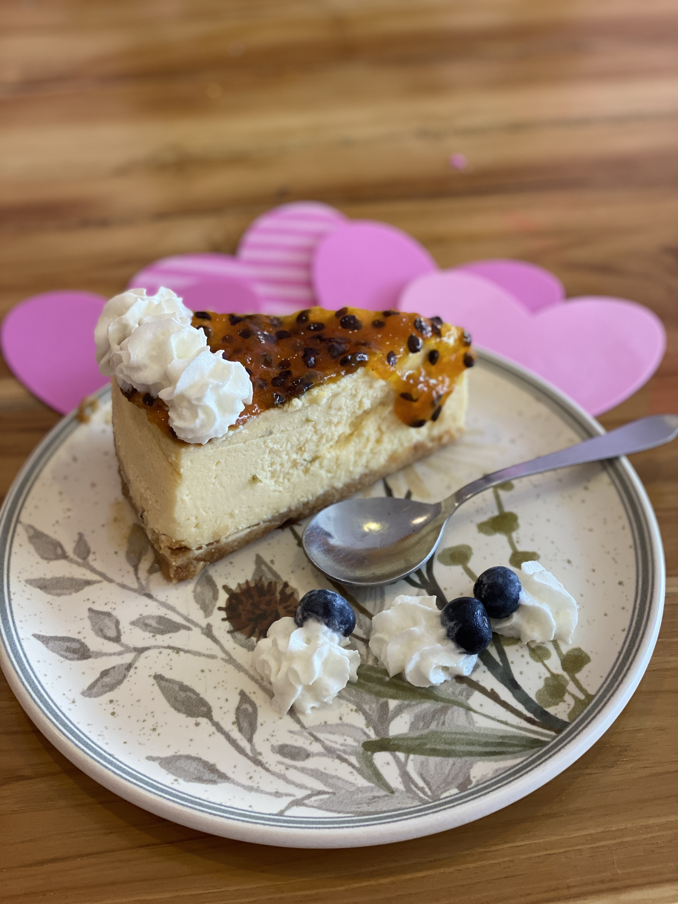
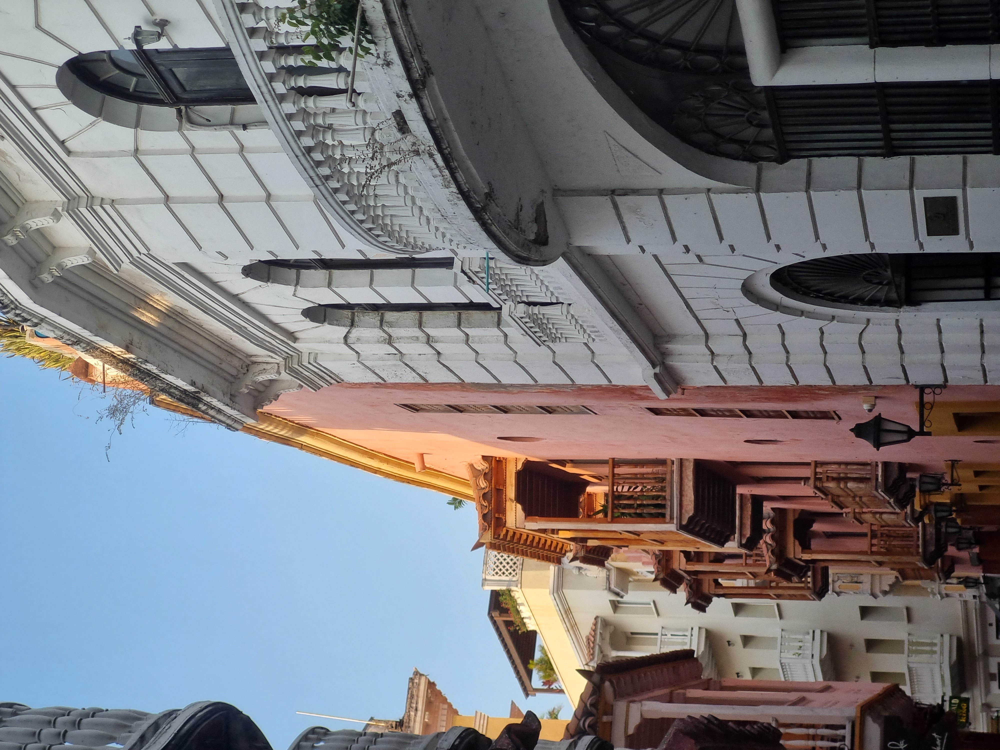
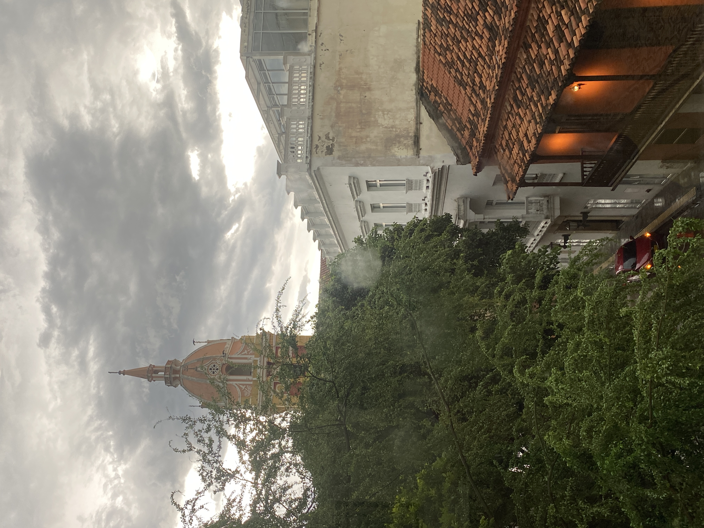
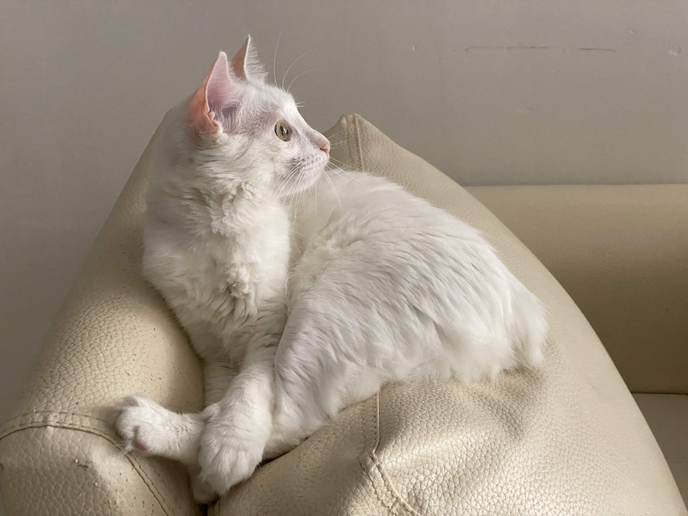
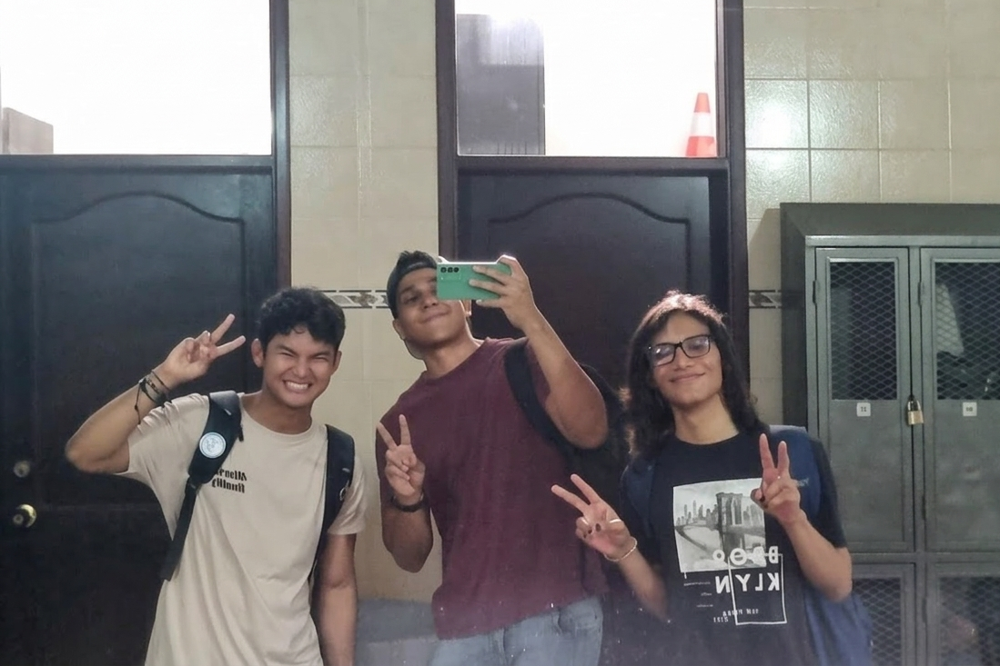
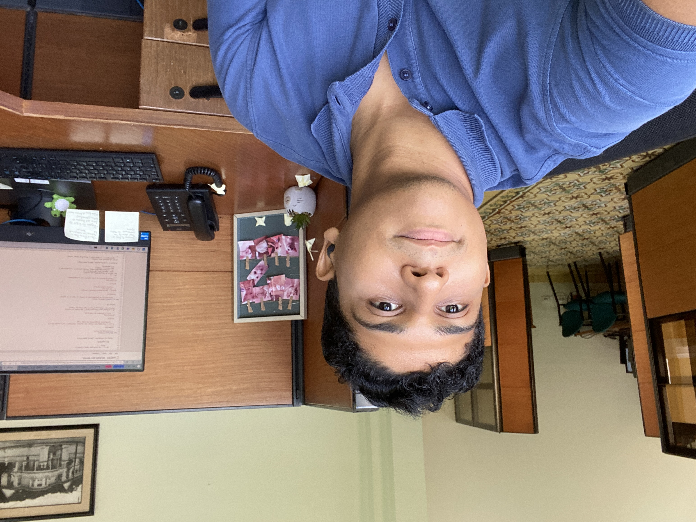
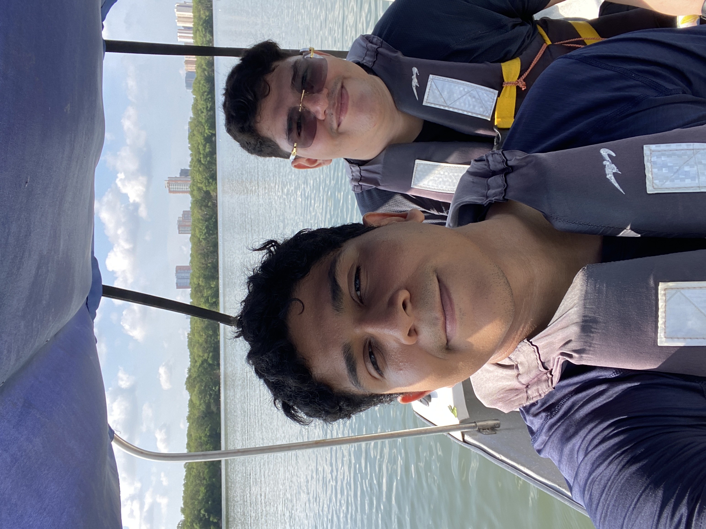

Sobre Mí & Visiones
Bits, datos y la constante búsqueda del impacto social a través de la tecnología.


"Me apasiona usar la tecnología para generar impacto social. He liderado proyectos enfocados en el bienestar comunitario y el apoyo a poblaciones vulnerables."

"Lo que me define es una mentalidad de propiedad y la curiosidad por resolver problemas complejos."

"Más allá de lo técnico, poseo una mentalidad enfocada a la investigación, analizando datos espaciales e información de seguridad pública para encontrar patrones."

"Construyendo soluciones escalables que generan impacto real en la intersección de Datos, Sistemas Backend e IA."
"Uniendo el mundo de los datos estructurados con perspectivas abstractas y creativas."



"Programación competitiva. Pensamiento eficiente bajo presión."


"Creo en el poder de la colaboración y en el entusiasmo como motor para construir soluciones con propósito. Disfruto trabajar en equipos multidisciplinarios, compartir conocimiento y enfrentar desafíos, valorando cómo cada proceso contribuye al crecimiento del equipo."